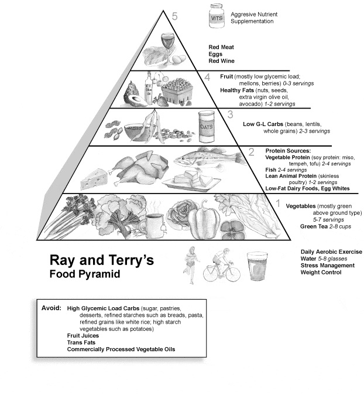

This post is a continuation on posts about Maslow’s hierarchy of needs. See Part 1, Part 2, and Part 3 for earlier details.
First, a clarification: health is an extremely broad topic, and I’ll focus on nutrition here. In my mental model (which is very engineering-oriented), my body is akin to a car (or plane, or ship…), and I want my car to perform like a race car. Race cars have all types of specialized components, but they need high-octane fuel and lots of oxygen to do their job well. Similarly, I feel the need to constantly adapt my diet and exercise routine for performance optimization. I’m not claiming to be very good currently, but given my trend of improvement, a few insights below are useful.

Food balance
To start, many items on supermarket shelves aren’t very natural (fresh produce excluded). The items in cans or boxes usually weren’t simply picked off a tree, and even if so, they probably were processed in a factory of some sort. This is one reason I think it’s difficult for many to adapt towards a healthier diet: because it takes a conscious effort.
Additionally, there’s misinformation and confusion around what constitutes a balanced diet. One needs only glance at the Food Pyramid Wikipedia article to glimpse some of the controversy around inaccurate information. Based on some concepts in the book “Fantastic Voyage”, by Kurzweil and Grossman, I’d prefer a pyramid more similar to the one above. Note how dramatically different the pyramid may look when compared to the relative quantity of offerings in a typical supermarket. This shows the effort and self-discipline required to stray away from eating “whatever looks good”.
Optimizing consumption
A person only needs a set number of calories to get through a day. The three sources of calories are fats, proteins, and carbohydrates (vitamins, fiber, etc. don’t supply calories). Though it might be surprising, carbohydrates aren’t necessary for the body, or at least not to the level of fats and proteins (think of an Inuit diet). Every day, you get to choose where these calories come from. If cookies or similar snacks are offered by friends or coworkers, it’s your choice to indulge. If you choose to avoid such options, the same conscious effort and self-discipline mention above will apply. Even choosing what beverage, and what quantity, you intake each day is a crucial decision. As with other opportunities, don’t forget to vote!
Testing
The most important ability is to question advice and not accept it at face value. If it works for someone else, that’s great, but don’t conclude that it will provide you the same results. After compiling a collection of ideas, it’s crucial to experiment and find what suits you best. Beyond the reaction your body might have to food, it’s important to find what other variables you value. Some foodies might prefer the taste or presentation of the food. Currently, I prefer minimal cooking time, and build my repertoire around this feature. At the end of the day, your body is providing you with a better instantaneous feedback loop than medical instruments can, so it’s helpful to try and harness that.
Weekly Extreme Exception
I can’t pass up the earlier reference to a race car without featuring the most overpower car in existence. With thousands of extra horsepower than the Queen Elizabeth II cruise ship, but speeding just one passenger along, the Bloodhound SSC is a rocket-powered monstrosity of a four-wheeled vehicle. Last year it reached a reasonable 200 mph during its public testing debut. The goal is 1000 mph, and I wish the team the best.